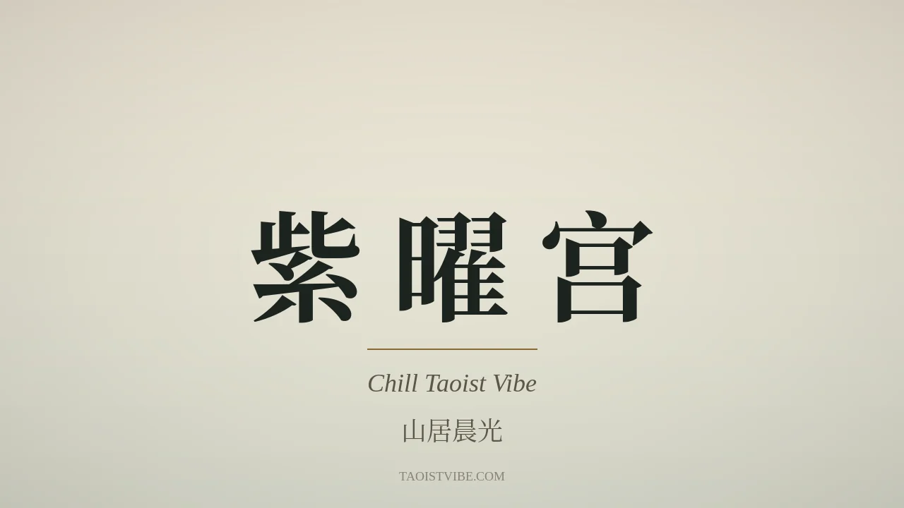

打开页面，先是白底上的题字，随后褪成一座浮在云海上的岛。页面标题是「紫曜宫 · Chill Taoist Vibe」，开场副题写着「山居晨光」。提示很轻：陪老人坐一会儿，或者按 WASD 起身散步。这是 kirin_alen（X @qiqileyuan）做的浏览器作品。按本站规则，下面以这件作品为中心。作者本人的介绍帖全文照录；作品页没有开放许可，所以只做独立导读，引用都很短。封面是自制字体图，不是作品截帧，也不是原帖视频里的画面。
/api/ 或未公开接口，未下载视频、音频或 models/ 里的模型，也没有请求许愿接口。作者本人在 X 上的帖子和回复按本站规则照录。作品页本身未见 LICENSE。地形引擎 ssochi/land 及其公开分支 kirinzhang/land 的根目录 LICENSE，于 2026-11-16（新加坡时间）经 raw.githubusercontent.com 现场核为同一份 “MIT License with Attribution Requirement”（Copyright (c) 2026 ssochi and the land contributors）。该许可要求派生作品保留可见署名 “Built with land — https://github.com/ssochi/land”，且不得暗示原作者背书；作品「关于」页已经写了这两句，本页也同样保留。这份许可管的是 land 引擎，不能外推到 Tripo3D 模型、Suno 音乐、使用者提供的老人角色，或作者原帖里的视频。因此本页不转载视频、音频、签文全文，也不用作品渲染帧做封面。
这是什么
在线地址是 www.taoistvibe.com。短链 https://t.co/e5Q7WPb5Cr 先转到 https://taoistvibe.com/，再转到这个带 www 的地址。页面是一份将近 1.8MB 的单文件 HTML，跑在 WebGL 里。核对当日的 Last-Modified 为 2026-11-16 09:27（新加坡时间；上游 2026-11-16 01:27:45 GMT）。
场景脚本开头的注释，把这张地图写成「漂浮在云海上的仙山岛」。步行路线是：山脚小居，过石桥，沿竹林苔阶上到山腰道观，再往后是自然隆起的主峰。主峰东肩有泉，注释里写有四十多米的瀑布，落入道观东侧、与道观同一层台地的听澜湖；湖水从南口漫成溪，再跌回山脚，过石桥，在西缘落入云海。出山门向东走不远，就是湖西岸的观鲲台。这些是脚本里的布局说明，本站没有按米去复核落差 ⚠️。
作者在 X 上说，前两天看到 Painted Valley 的画风，一直想做一座类似风格的道教小山；神像和主角模型用 Tripo3D，其他都是代码生成，视频用 Codex 做，音乐用 Suno。制作过程和工具是作者自报，本站没有对照会话或生成记录 ⚠️。
怎么走、可以做什么
默认像是坐在小院的摇椅上，望向山门。按 WASD 起身散步，按住鼠标右键转动视角，滚轮拉近拉远；Shift 跑，走近器物按 E，H 回到小院。底栏还可以切时辰、季节和天气，打开昼夜流转，切换画质，或直接去道观、观鲲、看全景。镜头预设的名字有：摇椅望山门、仙山岛全貌、西侧、背面、俯视、道观与主峰、观鲲台望湖瀑。
走近以后，院里可以坐下、听古琴；道观里可以上香、撞钟、击鼓、点烛、叩拜、求签；许愿树可以把红缎带系上去，也可以左右翻看别人已经挂上的愿望。页面自己写明：提交后，愿望和落款会对所有访客公开，并一直挂在树上，请不要写真实姓名、电话或住址。本站没有打开许愿接口，也没有读取已公开的愿望。
求签的签文，源码里写着「为本作原创，仅供静心参考」。本页不转载这些签文。观鲲台的提示，引用了《庄子》里「北冥有鱼，其名为鲲」那几句；源码还说明，候鸟聚成的「鲲」是这件作品自己画的粒子群。季节切换时，注释里写过秋天的五花山、春天道观四周开花、冬天叶团上积雪；下雪要到冬天。这些是源码里的设计，本站没有把每个季节都走一遍 ⚠️。
声音面板可以在「音乐」「自然音」和静音之间切换。默认曲目名称是「清静经」「八大神咒」一类，以及各殿的宝诰；缺文件时会提示还没有放进 audio/ 文件夹，并可以回到内置占位「山居琴音」。自然音在触屏设备上指向 audio/nature-bed.mp3。作者说音乐用了 Suno，这些文件是否就是他所说的 lofi，本站未试听，也未下载，不能确认 ⚠️。
页面 HTML 里还留着 land 引擎那套「选一张地图」「构建报告」「第一人称漫游」的壳。主体验是紫曜宫这一层。有人在原帖下问为什么不能游泳，作者回：「可以加，哈哈哈。」另有人说画面上出现许多黑色方块，作者请对方发图，以便排查。本站没有复现这些情况 ⚠️。
作者介绍帖全文照录
kirin_alen（@qiqileyuan）· 2026-11-16 00:40（新加坡时间，UTC+8）发布于 X
前两天看到painted valley实现的吉卜力画风，很是喜欢。
正好之前做过一些lofi音乐，一直想做一个类似风格的道教小山。就用 fable 5.2 +tripo3d制作了一个道观“紫曜宫”。
神像和主角模型是用tripo3d，其他都是代码生成。
并用codex生成了如下视频
音乐用suno。
帖子附一段约 55 秒、1920×1080 的视频。本站没有下载，也没有观看 ⚠️。同一条帖经过两次编辑：16:22（UTC）的第一稿在 “painted valley” 后面跟了 Painted Valley 的 remixes 页；约十八分钟后的现行文本去掉了这条链接，其余字句相同。
作者在这条帖下自己回过三句。有人问为什么不能游泳，他回：「可以加，哈哈哈。」有人说播放时网页界面很多地方像黑色方块，他用英文问对方能不能发几张图，帮他看问题。还有人说亲测好玩、画风可爱，他回：「nb！」
2026-11-16 下午经 X 公开读取时，这条帖约 5,150 次展示、133 个喜欢、91 次收藏、19 条回复、10 次转帖、1 条引用；视频播放约 2,440 次。这些数字会变 ⚠️。作者账号当时约 12,944 名关注者，同样会变 ⚠️。
它是怎样做出来的
「关于」页把底座写得很清楚：山谷、水系、草地、树木和风格化渲染，Built with land；这件作品基于分支 kirinzhang/land。云、远山、树和灌木的画法，归给 Painted Valley © 2026 Patch（MIT）。三维引擎是 three.js r147（MIT）。近景资产用 Blender 5.2：脚本建模、手绘底色贴图、顶点色环境遮蔽。牌匾和许愿缎带用 Ma Shan Zheng（OFL），神牌繁体字与补字用 Yuji Syuku（OFL）。源码注释还写，后期的笔触收尾改写自 Painted Valley 的 frame.js（MIT）：在重叠的小方块里取更平静的那一块，再给非植被的近景加上有粗细变化的描边。
2026-11-16 现场核对：kirinzhang/land 与 ssochi/land 的 LICENSE、README 哈希相同；分支里的 maps.js 仍是上游那六张样图（镜湖原野、哈特诺式山村等），没有「紫曜宫」。公开叉仓目前看起来还是 land 编辑器的副本，不能把它当成这件作品的完整源码发布 ⚠️。
水面有一处需要并置来看。关于页写：「水体细节参考了 Ultra Water 的思路，未复用其代码。」源码注释却写：「水面法线直接取 Ultra Water 的 FFT 波。」两处说法不一致，本页不作裁定，标为冲突待审 ⚠️。Ultra Water 的 LICENSE 同日核为 MIT，Copyright (c) 2026 Humpalumps。
关于页还写：老人角色模型由使用者提供；land 的作者并未为本作品背书。作者在帖子里则说，神像和主角模型来自 Tripo3D。本页因此不用作品截帧做封面，以免把这些模型或人物形象转发出去。
同类可对照、但不是同一件作品的，还有 Painted Valley、Ultra Water、海屿、What the water keeps。作者提到 Fable 5.2，也可以对照 官方的 Fable 5.2 提示词指南导读。
许可
作品页本身没有给出开放许可。可以核对的是上游引擎：ssochi/land 与 kirinzhang/land 的根目录 LICENSE，于 2026-11-16（新加坡时间）核为同一份带署名要求的 MIT 变体，版权人为 ssochi and the land contributors，年份 2026。全文见文末附录。作品「关于」页已经按该许可做了可见署名，并写明 land 的作者并未背书。three.js、Painted Valley 的 MIT、Ultra Water 的 MIT，以及两款 OFL 字体，都是独立项目的许可，不能覆盖这件作品自己的场景、交互、模型、签文和音乐。
因此本页只做导读和作者原帖照录，不把紫曜宫当作可全文转载的开源项目，也不把 land 的 README 当作本作品的说明来翻译。
核实边界与署名
- 这是以《紫曜宫》为中心的项目导读。用户发来的短链解析到作品页；作者介绍帖一并收录。
- 本站阅读了公开首页的 HTML 和可见文案，没有在浏览器里把岛走完，也没有观看原帖视频、试听音频或下载模型 ⚠️。
- ⚠️ 使用 Fable 5.2、Tripo3D、Codex 和 Suno，以及「其他都是代码生成」，均为作者自报，未对照制作记录。
- ⚠️ 瀑布落差、季节效果、曲库文件是否齐备、黑色方块是否仍出现，均未复现。
- ⚠️ 关于页写水面「参考思路、未复用代码」，源码注释写「直接取 Ultra Water 的 FFT 波」，冲突待审。
- ⚠️ 展示、喜欢、收藏、播放次数和关注者数量是核对当日的快照，会变。
- Bilibili 与 YouTube 频道只作为「关于」页上的链接记下，本站没有打开这两个主页。
署名：kirin_alen（@qiqileyuan）。作品页：www.taoistvibe.com。介绍帖：https://x.com/qiqileyuan/status/2122006851298693277。地形引擎：Built with land — https://github.com/ssochi/land。如需删除，请提交移除请求。
附录、land 许可证原文
以下为 2026-11-16（新加坡时间）经 raw.githubusercontent.com 从 ssochi/land 与 kirinzhang/land 根目录核到的同一份 LICENSE。它约束的是 land 引擎，不是紫曜宫的全部素材。
MIT License with Attribution Requirement
Copyright (c) 2026 ssochi and the land contributors
Project: https://github.com/ssochi/land
Permission is hereby granted, free of charge, to any person obtaining a copy
of this software and associated documentation files (the "Software"), to deal
in the Software without restriction, including without limitation the rights
to use, copy, modify, merge, publish, distribute, sublicense, and/or sell
copies of the Software, including for commercial purposes, and to permit
persons to whom the Software is furnished to do so, subject to the following
conditions:
1. The above copyright notice and this permission notice shall be included in
all copies or substantial portions of the Software.
2. Attribution. Any product, service, game, application, website, video,
image or other work that uses, incorporates, is derived from, or was
produced with the Software (including scenes, renders and assets it
generates) must display a visible credit to the project, naming it and
linking to its repository, for example:
Built with land — https://github.com/ssochi/land
The credit must appear where a user or viewer can reasonably see it: in the
work's credits, "About" or settings screen, documentation, website footer,
or, for videos and images, in the work itself or its description. It must
not be removed or obscured, and must not suggest that the project's authors
endorse the work.
THE SOFTWARE IS PROVIDED "AS IS", WITHOUT WARRANTY OF ANY KIND, EXPRESS OR
IMPLIED, INCLUDING BUT NOT LIMITED TO THE WARRANTIES OF MERCHANTABILITY,
FITNESS FOR A PARTICULAR PURPOSE AND NONINFRINGEMENT. IN NO EVENT SHALL THE
AUTHORS OR COPYRIGHT HOLDERS BE LIABLE FOR ANY CLAIM, DAMAGES OR OTHER
LIABILITY, WHETHER IN AN ACTION OF CONTRACT, TORT OR OTHERWISE, ARISING FROM,
OUT OF OR IN CONNECTION WITH THE SOFTWARE OR THE USE OR OTHER DEALINGS IN THE
SOFTWARE.